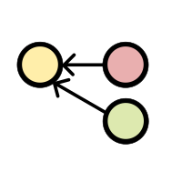

kappa-core is a distributed, offline-first database using append-only
logs and lightweight materialized views.
Peers can replicate with each other over any transport (websockets, udp,
bluetooth, sound waves) without conflicts.
- personal & community empowerment
- inverse scaling dynamics of p2p
- offline & local network use
- history is immutable
- feeds are cryptographically secure & cannot be tampered with
- conflict-free replication
- each user's subjective view of events represented
- read more about kappa architectures at http://kappa-architecture.com
check out the kappa-core github repo
- create a database that runs on node and the browser
- replicate between peers over websockets, webrtc, utp, etc
- represent log data using versioned materialized views that are cheap to create, destroy, and regenerate